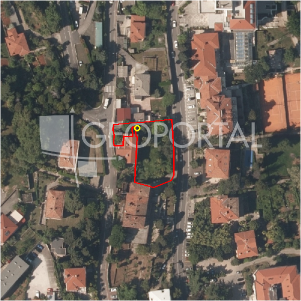

#37106 · OPATIJA, LOVRAN - građevinsko zemljište od 1144 m2
Lovran, Lovran, Primorsko-goranska · zemljiste · njuskalo · status active · oglas ↗
Ocjena
- Score
- 59 rule 59 · LLM – · 12.09.2026.
- RLV
- 272.000 € (229 €/m²) · ratio 1,18
- Ukupna investicija
- 2,58 M€
- GBP
- 951 m²
- Feedback
- –
- CRM
- –
Oglas
- Cijena
- 230.000 € (201 €/m²)
- Površina
- 1.144 m² · DKP 1.189 m² (odstupanje 3,9 %)
- Prodavatelj
- agencija · DUX Nekretnine
- Prvi put
- 11.09.2026. · zadnje 11.09.2026. · 0 d na tržištu
Povijest cijene
| Datum | Cijena |
|---|---|
| 11.09.2026. | 230.000 € |
Flagovi
zone_uncertainty zona nije pregledana (reviewed: false) (−5)llm_pending LLM ekstrakcija/ocjena nedostupna
Komponente score-a
| rlv | {'gbp': 951.2, 'kis': 0.8, 'nkp': 713.4000000000001, 'noi': None, 'rlv': 271867.43478260934, 'ratio': 1.1820323251417797, 'value': None, 'phases': 1, 'profile': 'obala_visestambeno', 'gdv_neto': 3138960.0000000005, 'cost_soft': 95120.0, 'gdv_bruto': 3923700.0000000005, 'kis_known': False, 'total_inv': 2583752.0, 'cost_build': 1902400.0, 'cost_other': 342432.0, 'cost_sales': 117711.00000000001, 'demolition': False, 'gbp_source': 'kis', 'rlv_per_m2': 228.652173913044, 'parcel_area': 1189.0, 'parcelation': False, 'roi_on_cost': 0.16932623564490729, 'profit_at_ask': 437497.00000000047, 'cost_demolition': 0.0, 'total_inv_phase': 2583752.0, 'parcel_area_effective': 1189.0, 'sale_price_per_m2_nkp': 5500.0} |
| hard | [] |
| info | ['llm_pending'] |
| rubric | {'permits': {'max': 5.0, 'detail': {'permit': 'none'}, 'points': 0.0}, 'location': {'max': 15.0, 'detail': {'source': 'rlv.yaml:pgz_opatija/row2', 'sale_price_per_m2_nkp': 5500.0}, 'points': 11.5}, 'physical': {'max': 4.0, 'detail': {'slope_pct': 19.69, 'road_access': 'yes', 'slope_points': 1.031}, 'points': 3.03}, 'liquidity': {'max': 3.0, 'detail': {'n_cuts': 0, 'points_cut': 0.0, 'points_days': 0.008333333333333333, 'seller_type': 'agencija', 'points_fresh': 0.5, 'price_cut_pct': None, 'days_on_market': 1, 'points_private': 0}, 'points': 0.51}, 'rlv_ratio': {'max': 25.0, 'detail': {'rlv': 271867, 'ratio': 1.182, 'asking_price': 230000.0}, 'points': 18.64}, 'ticket_fit': {'max': 10.0, 'detail': {'asking_price': 230000.0}, 'points': 6.13}, 'zone_quality': {'max': 8.0, 'detail': {'reason': 'zona nepoznata', 'source': 'nepoznato', 'zone_class': None}, 'points': 2.0}, 'profit_potential': {'max': 20.0, 'detail': {'roi_on_cost': 0.169, 'profit_at_ask': 437497}, 'points': 14.5}, 'price_vs_benchmark': {'max': 10.0, 'detail': {'source': 'auto:Lovran', 'deviation': 0.16, 'ask_eur_m2': 201, 'benchmark_eur_m2': 239.34}, 'points': 7.4}} |
| weights | {'llm': 0.4, 'rule': 0.6, 'model': 0.0} |
| penalties | {'zone_uncertainty': 5} |
| raw_score | 63,7 |
| rlv_notes | [] |
| flag_notes | {'max_gbp': 951, 'total_inv': 2583752, 'zone_code': None, 'zone_class': None, 'zone_source': 'nepoznato', 'zone_reviewed': None} |
| caps_applied | [] |
GIS
- Čestica
- k.o. 319945, k.č. 163/3 (pin_buffer, 0,88); k.o. 319945, k.č. 194/3 (pin_buffer, 0,80); k.o. 319945, k.č. 169/1 (pin_buffer, 0,76)
- Zona
- – (–)
- kig / kis / katnost
- – / – / –
- GP / UPU
- – · UPU –
- Pristup / nagib
- yes · 19,7 % (max 31,6 %)
- More
- 105 m · red 2 · ZOP 1000
- Zaštite
- Natura ne · zaštićeno ne · kulturno dobro ne
- Zgrade na čestici
- 0 %
- Match
- 0,88
Karta
Ortofoto (DOF)

RLV kalkulacija — pretpostavke
| gbp | {'value': 951.2, 'source': 'kis'} |
| kis | {'value': 0.8, 'source': 'default_profila'} |
| sea_row | {'value': '2', 'source': 'gis'} |
| soft_pct | {'value': 0.05, 'source': 'profil'} |
| nkp_ratio | {'value': 0.75, 'source': 'profil'} |
| cost_other | {'value': 342432.0, 'source': 'profil: doprinosi+uređenje po m² GBP, financiranje+rezerva % gradnje'} |
| parcel_area | {'value': 1189.0, 'source': 'dkp'} |
| asking_price | {'value': 230000.0, 'source': 'oglas'} |
| margin_on_cost | {'value': 0.15, 'source': 'profil'} |
| build_cost_per_m2_gbp | {'value': 2000.0, 'source': 'profil'} |
| sale_price_per_m2_nkp | {'value': 5500.0, 'source': 'rlv.yaml:pgz_opatija/row2'} |
| transfer_tax_and_acquisition | {'value': 0.06, 'source': 'profil'} |
Ekstrakcija iz oglasa
| utilities | ['struja', 'voda'] |
| access_road | yes |
| sea_distance_m_claim | 3000.0 |
Benchmarks mikrolokacije
| Vrsta | Vrijednost | n | Od | Izvor |
|---|---|---|---|---|
| land_ask_eur_m2 | 239 | 68 | 11.09.2026. | auto |
Opis oglasa
OPATIJA, LOVRAN, OKOLICA - Zemljište s predivnim pogledom na more. Iznad Lovrana, gradića duge i bogate prošlosti, sa stoljetnom tradicijom u turizmu, nazvanog po lovoru koji obilno raste na ovom području, u prilici smo ponuditi Vam građevinsko zemljište površine 1144 m² s prekrasnim pogledom na more. Parcela je pravilnog, stepenastog oblika, s osiguranim priključcima za struju i vodu. Pristup je omogućen asfaltiranim putem, a vlasništvo je uredno. Zemljište se nalazi 3 kilometra od mora, što je otprilike 5 minuta lagane vožnje automobilom. Ova nekretnina s velikim potencijalom idealna je za izgradnju luksuzne vile, pogodne za udoban obiteljski život ili kao investicija u turizam. Poštovani potencijalni kupci, Drago nam je što pokazujete interes za nekretnine iz naše ponude. Za sva dodatna pitanja i dogovor u vezi s razgledom nekretnine, slobodno nas kontaktirajte. Poštovani klijenti, agencijska provizija naplaćuje se u skladu s Općim uvjetima poslovanja www.dux-nekretnine.hr/opci-uvjeti-poslovanja ID KOD AGENCIJE: 34301 Denis Kaštelan Agent s licencom Mob: +385 91 950 4277 Tel: +385 91 480 8808 E-mail: denis@dux-nekretnine.hr www.dux-opatija.com